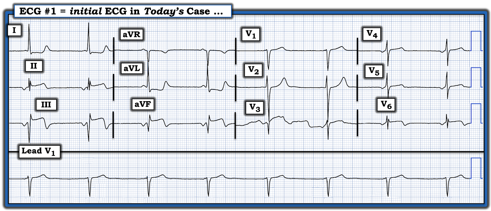
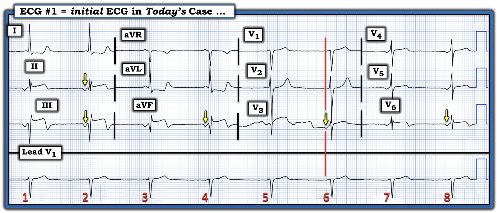
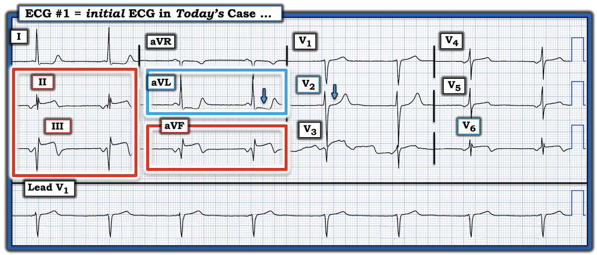
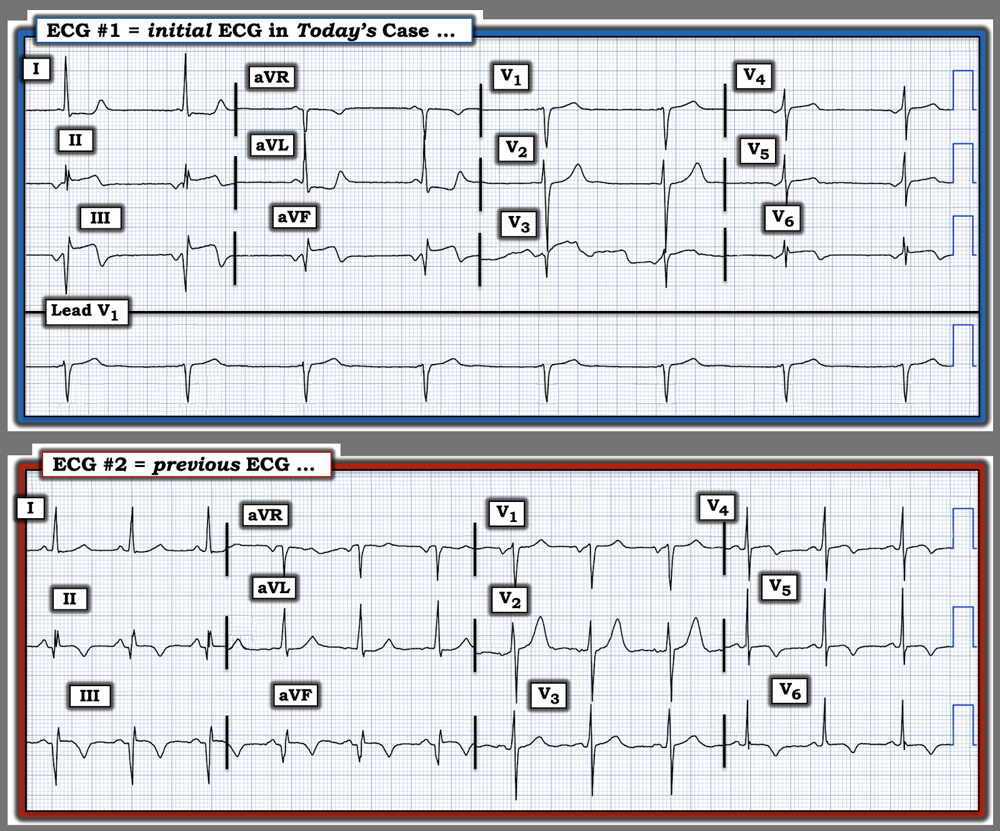

ECG Blog #530 — Mới hay cũ hay Wellens?
Tôi được gửi điện tâm đồ ở Hình 1 — nhưng không kèm theo bất kỳ bệnh sử nào. Tôi được hỏi ý kiến xem bản ghi này có phải là một STEMI cấp hay không?
CÂU HỎI:
- Tôi nên trả lời thế nào?
- Đây là Wellens "mới" hay "cũ"?


TRẢ LỜI CỦA TÔI:
Ngay cả khi không biết bệnh sử — điện tâm đồ ở Hình 1 rõ ràng là đáng lo ngại:
- ĐIỂM THEN CHỐT (PEARL) #1: Dù thường có xu hướng bỏ qua những điều cơ bản và đi thẳng vào các dấu hiệu hiển nhiên (mà ở đây thấy ở các chuyển đạo dưới!) — tôi thích luôn luôn nhìn qua nhịp trước tiên. (Để làm việc này — tôi ưa dùng cách tiếp cận Ps,Qs,3R để đọc nhịp một cách hệ thống = ECG Blog #185).
- Xin nhấn mạnh: Không cần dành quá vài giây cho lần nhìn nhịp ban đầu này — và cũng không cần đưa ra chẩn đoán nhịp xác định ở thời điểm này!
- Thay vào đó — bạn chỉ cần tìm hiểu: i) Tần số (Rate) ước chừng của nhịp là bao nhiêu? (tức là, Với tần số tim này, bệnh nhân có nhiều khả năng ổn định huyết động không?); — và, ii) Nhịp có phải là nhịp xoang hay là một nhịp khác?).
Nhịp có phải là nhịp xoang không?
Nếu tôi là người chịu trách nhiệm điều trị bệnh nhân trong ca hôm nay — tôi sẽ đến giường bệnh ngay lập tức để khai thác nhanh bệnh sử, và xác nhận rằng bệnh nhân này ổn định huyết động với nhịp như ở Hình 1. Vì tôi chưa được cung cấp thông tin này — tôi đã giả định bệnh nhân đủ ổn định để tôi tiếp tục đọc điện tâm đồ ban đầu hôm nay:
- ĐIỂM THEN CHỐT (PEARL) #2: Nhịp này không phải nhịp xoang — vì sóng P ở chuyển đạo II không dương! ( = các mũi tên VÀNG ở các chuyển đạo dưới trong Hình 2). Giả sử không có đảo điện cực — việc thấy sóng P âm ở chuyển đạo II cho biết đây là nhịp bộ nối hoặc nhịp nhĩ thấp.
- Lưu ý rằng các sóng P âm này ở chuyển đạo II của Hình 2 có khoảng PR hằng định, nên chúng có dẫn truyền (vì các sóng P này Related (liên quan) với các phức bộ QRS kế cận qua một khoảng PR cố định).
- Cũng lưu ý rằng không thấy sóng P nào trong suốt dải nhịp dài V1 ở cuối bản ghi. Tuy nhiên, có một sóng P âm ở chuyển đạo V3 ghi đồng thời (mũi tên VÀNG ở chuyển đạo đó). Như vậy, lý do không thấy sóng P ở chuyển đạo V1 — là hình dạng sóng P ngược dòng ở chuyển đạo V1 hẳn phải đẳng điện so với đường nền.
Ngoài ra ...
- Phức bộ QRS hẹp ( = thời gian không quá nửa ô lớn) — nên đây là nhịp trên thất.
- Nhịp thất đều (Regular) — với tần số (Rate) khoảng ~50/phút (tức là, khoảng R-R dài hơn 6 ô lớn một chút).
- Điều cốt lõi: Với việc không thấy sóng P ở chuyển đạo V1 + QRS hẹp + tần số thất chậm ~50/phút — đây có vẻ là một nhịp thoát bộ nối.


==================================
Phần còn lại của điện tâm đồ ...
Ngoài nhịp thoát bộ nối chậm — Hình 3 làm nổi bật các dấu hiệu MẤU CHỐT ở những chuyển đạo đáng lo ngại nhất:
- Thấy sóng Q cực kỳ lớn ở chuyển đạo III và aVF. Đi kèm với đó là đoạn ST có hình dạng tối cấp với điểm J chênh lên đáng kể và đoạn khởi đầu ST đi lên thẳng đuỗn. Có sóng T đảo ngược ở phần cuối khá sâu.
- Chuyển đạo dưới thứ 3 ( = chuyển đạo II) — có QRS phân mảnh, kỳ dị, với các thay đổi ST-T trông tương tự nhưng ít rõ hơn.
- Thay đổi ST-T soi gương thấy ở chuyển đạo aVL (trong hình chữ nhật XANH) — dưới dạng đoạn ST thẳng đuỗn và chênh xuống (dốc xuống từ từ, nhưng kết thúc bằng phần cuối sóng T dương).
- Chuyển đạo V3 không đọc được do nhiễu ...
- Các dấu hiệu ST-T ít rõ hơn nhưng vẫn đáng lo ngại có mặt ở 3 chuyển đạo khác. Gồm: i) Chuyển đạo I (có hình dạng tương tự, nhưng thay đổi soi gương ít nổi bật hơn so với aVL); ii) Chuyển đạo V2 (có ST thẳng đuỗn, mất đi đoạn ST chênh lên nhẹ bình thường hay thấy ở chuyển đạo này); — và, iii) Chuyển đạo V6 (với QRS và ST-T tương tự như ở chuyển đạo II).
Tổng hợp lại tất cả:
Tôi có nhiều câu hỏi hơn là câu trả lời sau khi xem điện tâm đồ này:
- Sóng Q cực lớn ở chuyển đạo III và aVF cho biết bệnh nhân đã từng bị nhồi máu thành dưới vào một thời điểm nào đó.
- Đoạn ST trông tối cấp với ST chênh lên, đi kèm ST chênh xuống soi gương ở chuyển đạo aVL — gợi ý một nhồi máu cơ tim thành dưới có thể mới xảy ra (hoặc đang diễn ra) — với các dấu hiệu ở chuyển đạo V2 và V6 gợi ý tổn thương kèm theo thành sau và thành bên.
- Dù vậy — sóng T đảo ngược ở phần cuối ở các chuyển đạo dưới và ở chuyển đạo V6 + phần cuối sóng T dương ở chuyển đạo I,aVL và V2 đều có thể là thay đổi tái tưới máu đang tiến triển của nhồi máu đã hoàn tất .
- ĐIỀU CỐT LÕI: Chúng ta cần có bệnh sử để đọc tiếp. Trong lúc đó — tìm được một điện tâm đồ cũ để so sánh sẽ vô cùng giá trị để xác định điều gì là "mới" so với "cũ".


==================================
Ca bệnh tiếp diễn:
Cuối cùng tôi cũng biết thêm được một chút về ca này.
- Điện tâm đồ này của một phụ nữ trung niên đã biết có bệnh mạch vành, đã được đặt stent sau một lần nhồi máu cơ tim khoảng 1 năm trước.
- Lần này bà nhập viện vì CP (Chest Pain — đau ngực) dữ dội đang tiếp diễn bắt đầu ~2 giờ trước khi ghi điện tâm đồ #1.
- Dù có nhịp thoát bộ nối chậm — bà vẫn ổn định huyết động.
Suy nghĩ của tôi:
- Dù với tiền sử và bệnh sử này tôi vẫn chưa chắc điều gì là "mới" so với "cũ" so với "mới chồng lên cũ" — với các thay đổi ST-T trông tối cấp kèm ST chênh lên và CP dữ dội đang tiếp diễn — cần thông tim khẩn để xác định giải phẫu mạch vành!
- ĐIỂM THEN CHỐT (PEARL) #3: Nhịp thoát bộ nối chậm ở Hình 3 là một đặc điểm bổ sung gợi ý có thể đang có một OMI đang diễn ra (nhồi máu cơ tim do tắc — Occlusion-associated Myocardial Infarction) và/hoặc mới xảy ra ==> Cần thông tim khẩn!
Tìm được một điện tâm đồ trước đây ...
Khi tra cứu hồ sơ bệnh án — đã tìm được một điện tâm đồ trước đây . Để tiện so sánh — tôi đặt cả hai bản ghi cạnh nhau ở Hình 4.
CÂU HỎI:
- Bạn rút ra được gì khi xem điện tâm đồ trước đây này?
- "Vấn đề" với điện tâm đồ trước đây này là gì?


TRẢ LỜI:
Trước khi giải quyết câu hỏi chúng ta rút ra được gì từ Hình 4 — hãy xem xét "vấn đề" này với điện tâm đồ trước đây:
- ĐIỂM THEN CHỐT (PEARL) #4: Quá thường xuyên khi tôi được gửi các ca có kèm điện tâm đồ trước đây để so sánh — không hề có thông tin về tình trạng lâm sàng vào thời điểm ghi bản ghi trước đó.
- Ví dụ, ở Hình 4 — có những bất thường rõ rệt, hiển nhiên trên bản ghi trước đây. Do đó, cách chúng ta đọc bản ghi so sánh vừa được cung cấp ở Hình 4 có thể khác nhau rất nhiều tùy theo điện tâm đồ #2 được ghi:
- Trong giai đoạn cấp của một OMI trước đó?
- Ngay sau khi bệnh nhân được đặt stent ~1 năm trước?
- HAY — Trong một lần tái khám thường quy sau khi bệnh nhân đã hết đau ngực nhiều tháng?
Khi xem xét thêm hồ sơ bệnh án — được biết điện tâm đồ trước đây này được ghi vào khoảng thời gian đặt stent (có lẽ ngay sau khi đặt stent ở RCA "thủ phạm").
- Có lẽ các sóng Q sâu ở chuyển đạo II,III,aVF của điện tâm đồ #2 là hậu quả của nhồi máu cơ tim thành dưới trước đây của bệnh nhân — trong đó vẫn còn ST chênh lên tồn dư. Ngoài ra — có sóng T đảo ngược sâu, đối xứng ở các chuyển đạo dưới và chuyển đạo trước tim bên của điện tâm đồ trước đây này, gợi ý thay đổi tái tưới máu nhiều khả năng xuất hiện sau đặt stent.
- Sóng T quá cao ở chuyển đạo V2 của điện tâm đồ #2 — cũng nhiều khả năng là một thay đổi tái tưới máu do OMI thành sau kèm theo.
Điểm MẤU CHỐT: Dù có những bất thường rõ rệt trên điện tâm đồ trước đây — chúng ta vẫn có thể tiến xa hơn trong chẩn đoán ở ca hôm nay nhờ bối cảnh lâm sàng là bệnh nhân hôm nay đến khoa cấp cứu (ED) vì CP dữ dội cấp bắt đầu chỉ 2 giờ trước khi ghi điện tâm đồ #1. Suy nghĩ của tôi về Hình 4 như sau:
- Nhịp trên điện tâm đồ ban đầu hôm nay không còn là nhịp xoang. Thay vào đó — là một nhịp thoát bộ nối chậm với tần số ~50/phút.
- Dù sóng Q thành dưới tương tự như trên điện tâm đồ trước đây — giờ đây có ST chênh lên nhiều hơn với hình dạng tối cấp ở mỗi chuyển đạo dưới (dưới dạng đoạn khởi đầu ST thẳng đuỗn, dốc lên).
- ST chênh xuống soi gương ở các chuyển đạo bên cao I, và đặc biệt là aVL giờ đây rõ ràng có vẻ tối cấp (với ST thẳng đuỗn, phần cuối sóng T dương nổi bật, và đoạn ST dốc xuống nhẹ ở chuyển đạo aVL — phản ánh hình ảnh soi gương ngược với ST-T ở chuyển đạo III).
- Nhồi máu thành bên được gợi ý bởi ST chênh lên cấp ở chuyển đạo V6.
- Cuối cùng — các thay đổi tái tưới máu thấy ở chuyển đạo trước tim trên điện tâm đồ #2 gần như đã hết (tức là, sóng T ở chuyển đạo V2 bớt dương — và sóng T đảo ngược ở chuyển đạo V4,V5 đã hết).
Điều cốt lõi:
Với biểu hiện CP dữ dội mới xuất hiện — so sánh điện tâm đồ ban đầu hôm nay với bản ghi trước đây gợi ý hiện đang có tắc lại cấp của RCA — cần thông tim khẩn!
Nhìn lại ca này — có vài điểm đáng được nhấn mạnh:
- Dù việc tìm được bản ghi trước đây hữu ích đến đâu trong ca hôm nay — nhu cầu thông tim khẩn đã được xác lập từ trước bởi: i) Tiền sử đã biết có bệnh mạch vành; — ii) Biểu hiện CP dữ dội mới xuất hiện chỉ 2 giờ trước khi ghi điện tâm đồ #1; — và, iii) Nhịp thoát bộ nối chậm đi kèm các thay đổi ở chuyển đạo chi trên điện tâm đồ #1 trông rõ ràng là tối cấp.
- Troponin tăng sẽ củng cố thêm nhu cầu thông tim khẩn — nhưng không cần Troponin tăng mới biết là có chỉ định thông tim khẩn (Hãy nhớ rằng Troponin ban đầu có thể bình thường dù có tắc mạch vành cấp — và chờ đến khi Troponin cuối cùng tăng lên chỉ khiến mất thêm cơ tim).
- Siêu âm tim tại giường cho thấy rối loạn vận động khu trú thành dưới sẽ củng cố thêm nhu cầu thông tim khẩn — nhưng điều này cũng không cần thiết để biết là có chỉ định thông tim khẩn (tức là, Chúng ta biết bệnh nhân này đã từng bị nhồi máu cơ tim — nên sẽ không thể biết rối loạn vận động thành nào là mới hay cũ).
- Dù hội chứng Wellens thường gặp nhất với các bất thường ST-T ở chuyển đạo trước tim phía trước (do hẹp mức độ nặng của LAD) — bạn có thể thấy các bất thường ST-T của hội chứng Wellens ở bất kỳ vùng phân bố mạch vành nào. Dù vậy — bệnh nhân hôm nay đến với CP mới — sóng Q sâu và ST chênh lên tối cấp — tất cả những điều đó cho chúng ta biết đây không phải hội chứng Wellens.
- Thay vào đó — hội chứng Wellens biểu hiện các dấu hiệu ST-T của tái tưới máu sau khi mạch vành bị tắc thoáng qua và trước khi xảy ra tổn thương lớn — khi đó bệnh nhân hết đau vì mạch vành bị tắc thoáng qua nay đã tự thông trở lại!
- (Xem ECG Blog #350 và ECG Blog #453 — để ôn lại các tiêu chuẩn và dấu hiệu của hội chứng Wellens).
==========================================
Lời cảm ơn: Xin cảm ơn người đã gửi ẩn danh ca bệnh hôm nay cùng các bản ghi này.
==========================================